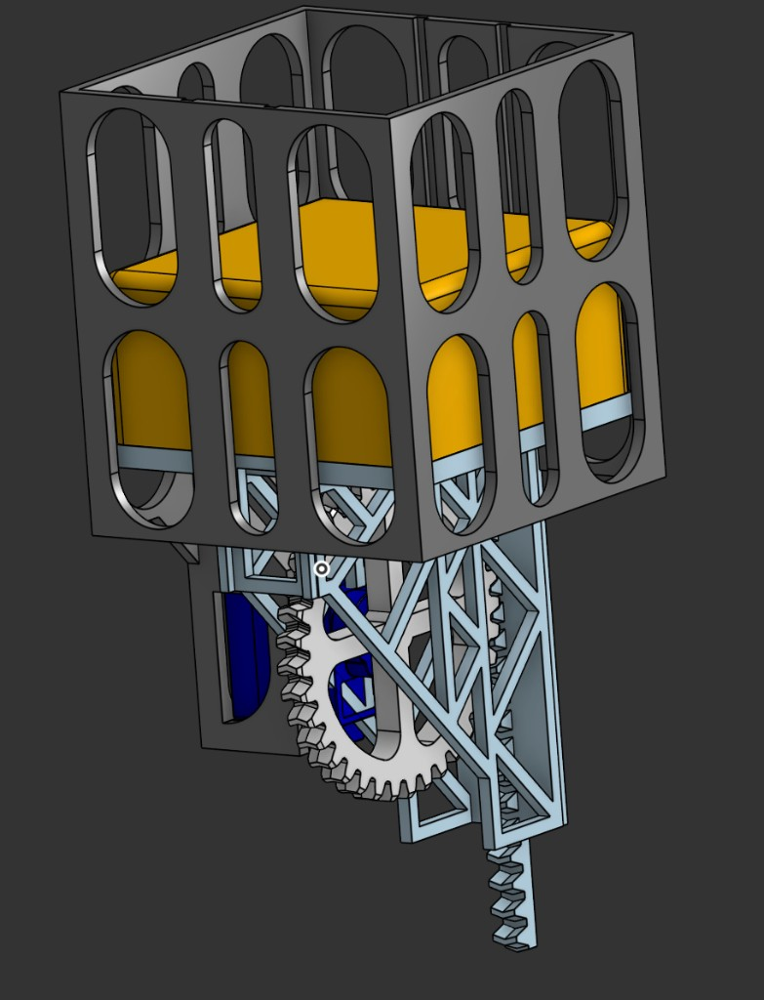
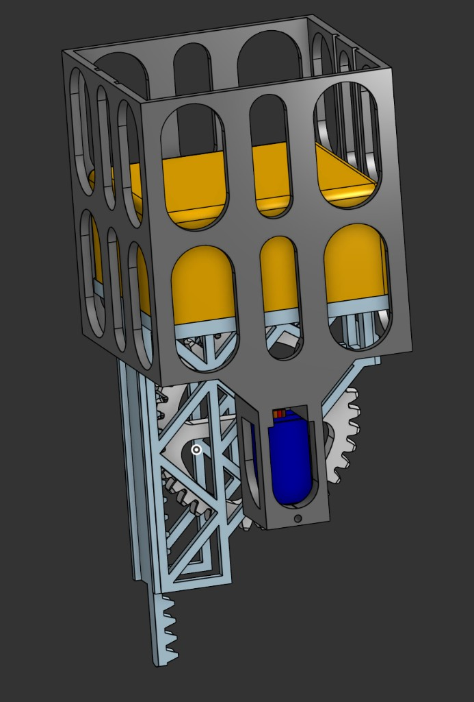
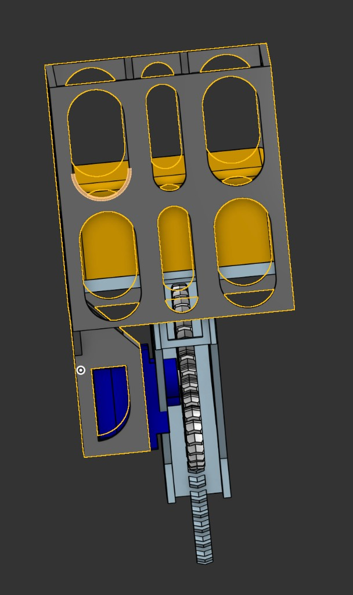

Tilt platform
Closed-loop NEMA stepper concept for a 36 inch table with +/-10 degree operating range.
Electromechanical game table
A large-format tilt-table platform for a steel marble, combining stepper-driven motion, SG90 pop-up traps, rack-and-pinion elevator modules, hall sensing, LEDs, and a browser workspace for mechanical trade studies.
What it is
The project explores a modular marble-maze platform where the player controls tilt while the table changes underneath the marble. The current repo contains mechanical calculators, browser visualizers, servo control software, Arduino firmware, and planning docs for the full electromechanical system.
Closed-loop NEMA stepper concept for a 36 inch table with +/-10 degree operating range.
SG90-driven wall/floor/hole modules plus electromagnet and hall-sensor concepts.
Static browser tools for actuator layouts, force diagrams, wall travel, and tilt geometry.
Current prototype
The latest CAD direction uses a printed servo elevator: a rack-and-pinion lift driven by an SG90, with a lightweight frame and guide structure for selectable wall, floor, and hole states.



System architecture
3-motor tilt-table studies, actuator architecture comparison, wall elevator geometry, and free-body diagrams.
Arduino PCA9685 servo bridge, Python CLI, browser control center, and saved per-servo calibration.
WS2811 LED strip experiments on an Arduino UNO R4 WiFi, plus planned hall sensors and camera tracking.
Planned solo, trap-master, AI-runner, speedrun, and puzzle modes with scoring and stateful traps.
Project tools
Compare vertical integrated cells against horizontal actuator bays with live 2D and 3D views.
Simulator 3-Motor Tilt TableExplore geometry, motion, and mechanical clearances for the tilt-table drive.
Calculator Wall ActuatorCalculate servo-driven wall travel and test the three-position mechanism concept.
Analysis Free Body DiagramVisualize loading assumptions for tilt-table mechanism options.
Hardware Control Center DocsRun the Raspberry Pi control center, servo CLI, camera preview, and calibration flow.
Firmware LED SketchArduino UNO R4 sketch for the 16 LED WS2811 cube array on pin D11.
Build status
Iterate SG90 elevator stiffness, rack geometry, and FDM print settings.
Run the PCA9685 servo bridge and control center on the bench with multiple modules.
Combine tilt platform, maze plate, lighting, sensing, and game software into a demo rig.